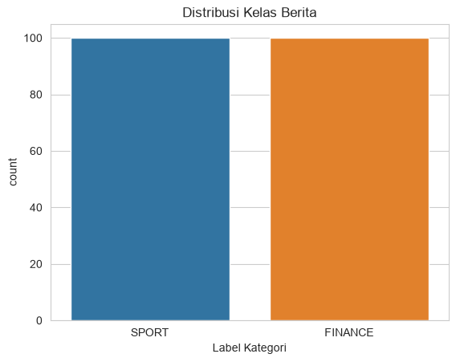
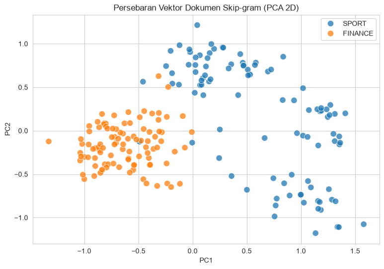
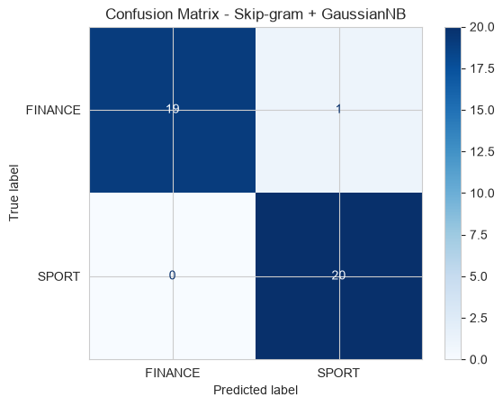
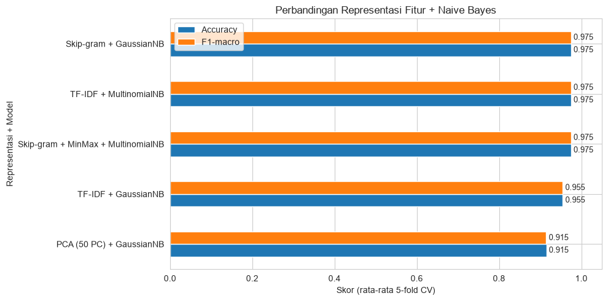

KLASIFIKASI#
Klasifikasi Berita Detik.com (SPORT vs FINANCE) dengan Skip-gram dan Naive Bayes#
Muat kembali dataset berita hasil crawling (
data_berita_sport_finance.csv).Lakukan preprocessing teks (cleansing, case folding, stopword removal, stemming).
Bangun representasi vektor kata dengan Word2Vec metode Skip-gram (
sg=1).Ubah setiap berita menjadi satu vektor dokumen (rata-rata vektor kata penyusunnya).
Lakukan klasifikasi berita menggunakan Naive Bayes.
Evaluasi model (accuracy, precision, recall, F1-score, confusion matrix, dan cross-validation).
Bandingkan hasilnya dengan representasi TF-IDF dan PCA dari tugas sebelumnya.
Alur Kerja#
Data CSV -> Preprocessing -> Tokenisasi -> Skip-gram (Word2Vec) -> Vektor Dokumen -> Naive Bayes -> Evaluasi
Penjelasan cell ini: Cell ini adalah halaman judul sekaligus instruksi tugas. Tidak ada kode yang dijalankan di sini. Fungsinya memberi gambaran tujuan dan urutan langkah sebelum masuk ke implementasi.
Import Library#
Penjelasan cell berikutnya: Semua library di-import sekali di awal agar rapi.
RANDOM_STATE = 42dipakai di semua proses acak (pembagian data, Word2Vec, cross-validation) supaya hasil bisa direproduksi.warnings.filterwarnings("ignore")menyembunyikan peringatan yang tidak penting agar output bersih.nltk.download(...)mengunduh daftar stopword jika belum ada di komputer.
import os
import re
import warnings
import numpy as np
import pandas as pd
import matplotlib.pyplot as plt
import seaborn as sns
import nltk
from nltk.corpus import stopwords
from Sastrawi.Stemmer.StemmerFactory import StemmerFactory
from gensim.models import Word2Vec
from sklearn.decomposition import PCA
from sklearn.model_selection import train_test_split, StratifiedKFold, cross_validate
from sklearn.naive_bayes import GaussianNB, MultinomialNB
from sklearn.preprocessing import MinMaxScaler
from sklearn.pipeline import make_pipeline
from sklearn.metrics import (accuracy_score, classification_report,
confusion_matrix, ConfusionMatrixDisplay)
warnings.filterwarnings("ignore")
nltk.download('stopwords', quiet=True)
RANDOM_STATE = 42
sns.set_style("whitegrid")
print("Semua library berhasil di-import.")
Semua library berhasil di-import.
1. Memuat Dataset#
Penjelasan cell berikutnya: Dataset hasil crawling dibaca dari data_berita_sport_finance.csv. Kolom Judul Berita dan Isi Berita digabung menjadi satu kolom Teks Mentah supaya model punya konteks kata yang lebih kaya (sama seperti pada tahap TF-IDF sebelumnya). fillna('') mencegah error jika ada sel kosong.
Selain itu ditampilkan:
df.shape: jumlah baris dan kolom.value_counts()dan grafik batang: jumlah berita per kelas. Kelas yang seimbang (sama banyak) membuat akurasi lebih layak dipercaya.
df = pd.read_csv('data_berita_sport_finance.csv')
df['Teks Mentah'] = df['Judul Berita'].fillna('') + ' ' + df['Isi Berita'].fillna('')
print("Bentuk dataset:", df.shape)
print("\nDistribusi kelas:")
print(df['Label Kategori'].value_counts())
sns.countplot(data=df, x='Label Kategori', palette=['#1f77b4', '#ff7f0e'])
plt.title('Distribusi Kelas Berita')
plt.show()
df[['Label Kategori', 'Judul Berita', 'Isi Berita']].head()
Bentuk dataset: (200, 4)
Distribusi kelas:
Label Kategori
SPORT 100
FINANCE 100
Name: count, dtype: int64

| Label Kategori | Judul Berita | Isi Berita | |
|---|---|---|---|
| 0 | SPORT | Sempat Ada Banjir, Asian Games 2026 di Jepang ... | Kota Nagoya di Jepang selaku tuan rumah Asian ... |
| 1 | SPORT | Debut di Asian Games, Ubed Tak Sabar Rebut Ema... | Moh. Zaki Ubaidillah akan menjalani debutnya d... |
| 2 | SPORT | Men's World Tennis Championship: Rifqi dan Raf... | Dua petenis Indonesia, Muhammad Rifqi Fitriadi... |
| 3 | SPORT | Kevin Sanjaya Antusias Lihat Semangat Talenta ... | Audisi Umum PB Djarum 2026 sedang berlangsung ... |
| 4 | SPORT | Atlet Muda Modern Pentathlon Punya Kesempatan ... | Modern Pentathlon akan dipertandingkan dalam m... |
2. Preprocessing Teks#
Skip-gram belajar dari urutan kata dan konteks sekitar kata. Artinya, input-nya adalah daftar kata per dokumen dan bukan matriks TF-IDF (tfidf_berita.csv) yang sudah kehilangan urutan kata. File tfidf_berita.csv dan pca_berita.csv hanya menyimpan angka, sedangkan teks bersihnya tidak tersimpan. Jadi preprocessing dijalankan ulang di sini dari data mentah dengan langkah yang sama seperti tugas sebelumnya.
Penjelasan cell berikutnya: Cell ini menyiapkan fungsi bersihkan_teks() dengan tahapan:
Cleansing: membuang semua karakter selain huruf (angka dan tanda baca hilang).
Case folding: mengubah semua huruf menjadi huruf kecil.
Stopword removal: membuang kata umum (gabungan stopword Indonesia, Inggris, dan daftar tambahan khas berita) serta kata satu huruf.
Stemming: mengembalikan kata ke bentuk dasar dengan Sastrawi (misalnya “menang” dan “kemenangan” menjadi “menang”).
stop_words_final = set(stopwords.words('indonesian')).union(set(stopwords.words('english')))
custom_stopwords = {
'dan','atau','yang','dengan','juga','karena','namun','sehingga','adalah','akan',
'saat','pada','untuk','dari','oleh','dalam','dapat','kami','mereka','kita','saya',
'ini','itu','tersebut','tsb','dll','dkk','spt','yg','dgn','dr','jr','sr','thn',
'tdk','gak','nggak','ya','ia','terkait','berdasarkan','setelah','sebelum',
'sambil','selain','sekitar','hingga','maupun','bisa','per','waktu','apakah','adanya'
}
stop_words_final |= custom_stopwords
stemmer = StemmerFactory().create_stemmer()
def bersihkan_teks(text):
if not isinstance(text, str):
return ""
text = re.sub(r'[^a-zA-Z\s]', ' ', text).lower() # cleansing + case folding
text = re.sub(r'\s+', ' ', text).strip()
words = [w for w in text.split() if w not in stop_words_final and len(w) > 1]
return ' '.join(stemmer.stem(w) for w in words) # stemming
# Uji fungsi pada satu contoh kalimat
print(bersihkan_teks("Timnas Indonesia memenangkan pertandingan di Asian Games 2026!"))
timnas indonesia menang tanding asi games
Menerapkan Preprocessing ke Seluruh Data (dengan Cache)#
Penjelasan cell berikutnya: Stemming Sastrawi cukup lambat (sekitar 2-4 menit untuk 200 berita). Agar tidak mengulang setiap kali notebook dijalankan, hasilnya disimpan ke teks_bersih.csv.
Jika file cache sudah ada dan jumlah barisnya cocok, hasil dibaca langsung dari file.
Jika belum ada, fungsi
bersihkan_teks()diterapkan ke semua berita lalu hasilnya disimpan.
Hasilnya masuk ke kolom baru Teks Bersih.
CACHE_FILE = 'teks_bersih.csv'
if os.path.exists(CACHE_FILE) and len(pd.read_csv(CACHE_FILE)) == len(df):
df['Teks Bersih'] = pd.read_csv(CACHE_FILE)['Teks Bersih'].fillna('').values
print("Teks bersih dimuat dari cache.")
else:
print("Memproses pembersihan teks (estimasi 2-4 menit)...")
df['Teks Bersih'] = df['Teks Mentah'].apply(bersihkan_teks)
df[['Label Kategori', 'Teks Bersih']].to_csv(CACHE_FILE, index=False)
print("Selesai dan disimpan ke", CACHE_FILE)
df[['Label Kategori', 'Teks Bersih']].head()
Teks bersih dimuat dari cache.
| Label Kategori | Teks Bersih | |
|---|---|---|
| 0 | SPORT | banjir asi games jepang aman kota nagoya jepan... |
| 1 | SPORT | debut asi games ubed sabar rebut emas regu put... |
| 2 | SPORT | men world tennis championship rifqi rafalentin... |
| 3 | SPORT | kevin sanjaya antusias lihat semangat talenta ... |
| 4 | SPORT | atlet muda modern pentathlon sempat karier mil... |
3. Tokenisasi#
Penjelasan cell berikutnya: Word2Vec menerima input berupa daftar dokumen, dan tiap dokumen adalah daftar kata (list of list of str). Karena teks bersih sudah dipisahkan spasi, tokenisasi cukup memakai .split().
Dokumen yang setelah preprocessing menjadi kosong dibuang, karena tidak bisa dijadikan vektor. Lalu dihitung statistik korpus: jumlah dokumen, total token, ukuran kosakata (kata unik), dan rata-rata panjang dokumen.
df['Tokens'] = df['Teks Bersih'].str.split()
df = df[df['Tokens'].str.len() > 0].reset_index(drop=True)
tokenized = df['Tokens'].tolist()
y = df['Label Kategori'].values
total_token = sum(len(t) for t in tokenized)
vocab_unik = len(set(w for t in tokenized for w in t))
print(f"Jumlah dokumen : {len(tokenized)}")
print(f"Total token : {total_token}")
print(f"Kosakata unik : {vocab_unik}")
print(f"Rata-rata token/dokumen : {total_token / len(tokenized):.1f}")
print("\nContoh 15 token pertama dokumen ke-0:", tokenized[0][:15])
Jumlah dokumen : 200
Total token : 39025
Kosakata unik : 4883
Rata-rata token/dokumen : 195.1
Contoh 15 token pertama dokumen ke-0: ['banjir', 'asi', 'games', 'jepang', 'aman', 'kota', 'nagoya', 'jepang', 'tuan', 'rumah', 'asi', 'games', 'terjang', 'banjir', 'ajang']
4. Melatih Model Skip-gram (Word2Vec)#
Cara kerja Skip-gram: Model mengambil satu kata target lalu belajar memprediksi kata-kata konteks di sekitarnya (window). Kata yang sering berada di konteks serupa akan mendapat vektor yang berdekatan. Misalnya kata bertema bursa saham akan berdekatan satu sama lain, dan terpisah dari kata bertema sepak bola.
Penjelasan cell berikutnya: Model dilatih dengan parameter berikut.
Parameter |
Nilai |
Arti |
|---|---|---|
|
|
Memakai Skip-gram (jika |
|
|
Tiap kata menjadi vektor 100 dimensi. |
|
|
Melihat 5 kata ke kiri dan 5 kata ke kanan sebagai konteks. |
|
|
Kata yang muncul kurang dari 2 kali diabaikan (biasanya noise/salah ketik). |
|
|
Jumlah negative sampling untuk mempercepat pelatihan. |
|
|
Jumlah putaran pelatihan. Korpus ini kecil, jadi perlu banyak putaran. |
|
|
Dibuat tetap agar hasil bisa direproduksi. |
Korpus hanya 200 berita, jadi kualitas vektor kata tidak sekuat model yang dilatih pada jutaan dokumen. Namun untuk membedakan dua topik yang sangat berbeda seperti olahraga dan keuangan, ini biasanya sudah cukup.
VECTOR_SIZE = 100
model_sg = Word2Vec(
sentences=tokenized,
vector_size=VECTOR_SIZE,
window=5,
min_count=2,
sg=1, # 1 = Skip-gram
negative=10,
epochs=100,
seed=RANDOM_STATE,
workers=1
)
print("Ukuran vocabulary model :", len(model_sg.wv))
print("Dimensi vektor :", model_sg.wv.vector_size)
Ukuran vocabulary model : 3141
Dimensi vektor : 100
Eksplorasi Vektor Kata#
Penjelasan cell berikutnya: Untuk memeriksa bahwa Skip-gram benar-benar belajar makna, dipilih beberapa kata lalu dicari 5 kata paling mirip berdasarkan cosine similarity vektornya (most_similar). Pengecekan if kata in model_sg.wv memastikan kata memang ada di kosakata, karena kata yang tidak ada akan menimbulkan error. Anda bisa mengganti daftar kata dengan kata lain dari dataset Anda.
kata_uji = ['saham', 'rupiah', 'motogp', 'atlet']
for kata in kata_uji:
if kata in model_sg.wv:
mirip = model_sg.wv.most_similar(kata, topn=5)
print(f"{kata:8s} -> " + ", ".join(f"{k} ({s:.2f})" for k, s in mirip))
else:
print(f"{kata:8s} -> tidak ada di vocabulary (coba kata lain)")
saham -> dividend (0.64), independen (0.63), artikel (0.62), analisis (0.62), rups (0.62)
rupiah -> rapi (0.63), paman (0.60), akuntabel (0.56), budidaya (0.55), serap (0.54)
motogp -> aragon (0.59), mandalika (0.58), baby (0.57), marquez (0.56), alien (0.56)
atlet -> disabilitas (0.53), prestasi (0.50), games (0.49), training (0.49), judo (0.49)
5. Membuat Vektor Dokumen#
Skip-gram menghasilkan vektor untuk kata, sedangkan klasifikasi membutuhkan satu vektor untuk setiap berita. Cara paling sederhana adalah rata-rata (mean pooling) dari semua vektor kata dalam berita tersebut:
Penjelasan cell berikutnya: Fungsi doc_vector() mengambil vektor tiap kata yang ada di vocabulary, lalu merata-ratakannya. Kata yang tidak ada di vocabulary (mis. muncul hanya sekali) dilewati. Jika tidak ada satu kata pun yang dikenal, dikembalikan vektor nol. Hasil akhirnya adalah matriks X berukuran (jumlah berita, 100) dan larik label y.
def doc_vector(tokens, wv):
vecs = [wv[t] for t in tokens if t in wv]
if not vecs:
return np.zeros(wv.vector_size)
return np.mean(vecs, axis=0)
X = np.vstack([doc_vector(tokens, model_sg.wv) for tokens in tokenized])
print("Bentuk X (dokumen x dimensi):", X.shape)
print("Bentuk y :", y.shape)
print("Nilai minimum di X :", round(X.min(), 4), "(ada nilai negatif)")
Bentuk X (dokumen x dimensi): (200, 100)
Bentuk y : (200,)
Nilai minimum di X : -1.1167 (ada nilai negatif)
Visualisasi Vektor Dokumen (PCA 2D)#
Penjelasan cell berikutnya: Vektor 100 dimensi tidak bisa digambar langsung, sehingga direduksi ke 2 dimensi dengan PCA hanya untuk visualisasi. Setiap titik adalah satu berita, diwarnai menurut kelasnya. Jika titik biru (SPORT) dan oranye (FINANCE) membentuk dua kelompok yang terpisah, artinya vektor Skip-gram sudah cukup membedakan kedua topik, sehingga klasifikasi akan relatif mudah.
pca_2d = PCA(n_components=2, random_state=RANDOM_STATE)
X_2d = pca_2d.fit_transform(X)
plt.figure(figsize=(9, 6))
sns.scatterplot(x=X_2d[:, 0], y=X_2d[:, 1], hue=y,
palette={'SPORT': '#1f77b4', 'FINANCE': '#ff7f0e'},
s=80, alpha=0.75)
plt.title('Persebaran Vektor Dokumen Skip-gram (PCA 2D)')
plt.xlabel('PC1'); plt.ylabel('PC2')
plt.show()
print(f"Variansi yang dijelaskan 2 komponen: {pca_2d.explained_variance_ratio_.sum():.1%}")

Variansi yang dijelaskan 2 komponen: 23.3%
6. Pembagian Data Latih dan Uji#
Penjelasan cell berikutnya: Data dibagi menjadi 80% data latih (untuk melatih Naive Bayes) dan 20% data uji (untuk menguji model pada data yang belum pernah dilihat). Parameter penting:
stratify=y: proporsi SPORT dan FINANCE dijaga sama di data latih dan data uji.random_state=42: pembagian selalu sama setiap dijalankan.
X_train, X_test, y_train, y_test = train_test_split(
X, y, test_size=0.2, stratify=y, random_state=RANDOM_STATE
)
print("Data latih:", X_train.shape, "| Data uji:", X_test.shape)
print("\nKelas pada data latih:\n", pd.Series(y_train).value_counts())
print("\nKelas pada data uji:\n", pd.Series(y_test).value_counts())
Data latih: (160, 100) | Data uji: (40, 100)
Kelas pada data latih:
FINANCE 80
SPORT 80
Name: count, dtype: int64
Kelas pada data uji:
FINANCE 20
SPORT 20
Name: count, dtype: int64
7. Klasifikasi dengan Naive Bayes#
Pilihan varian Naive Bayes. Naive Bayes menerapkan Teorema Bayes dengan asumsi setiap fitur saling bebas:
Vektor Skip-gram berisi bilangan kontinu dan bisa negatif. Konsekuensinya:
GaussianNB(dipakai sebagai model utama): cocok untuk fitur kontinu karena mengasumsikan tiap fitur berdistribusi normal di setiap kelas.MultinomialNB: hanya menerima nilai non-negatif (cocok untuk hitungan kata atau TF-IDF). Agar bisa dipakai pada vektor Skip-gram, nilainya perlu diskalakan ke rentang 0-1 dulu. Ini dicoba sebagai pembanding di bagian 9.
Penjelasan cell berikutnya: Model GaussianNB dibuat, dilatih dengan fit() pada data latih, lalu memprediksi kelas data uji dengan predict(). Akurasi langsung ditampilkan sebagai gambaran awal.
gnb = GaussianNB()
gnb.fit(X_train, y_train)
y_pred = gnb.predict(X_test)
print(f"Akurasi data uji (GaussianNB + Skip-gram): {accuracy_score(y_test, y_pred):.4f}")
Akurasi data uji (GaussianNB + Skip-gram): 0.9750
import joblib
from sklearn.naive_bayes import GaussianNB
# opsional: latih ulang pada seluruh data agar model final memakai semua berita
gnb_final = GaussianNB().fit(X, y)
joblib.dump({'wv': model_sg.wv, 'clf': gnb_final}, 'model_skipgram_nb.pkl')
['model_skipgram_nb.pkl']
8. Evaluasi Model#
Akurasi saja kurang lengkap, jadi dipakai beberapa metrik:
Precision: dari semua berita yang diprediksi suatu kelas, berapa yang benar.
Recall: dari semua berita yang sebenarnya suatu kelas, berapa yang berhasil ditemukan.
F1-score: rata-rata harmonik precision dan recall.
Confusion matrix: tabel benar/salah prediksi per kelas. Diagonal menunjukkan prediksi benar, di luar diagonal adalah kesalahan.
Penjelasan cell berikutnya: classification_report mencetak precision, recall, dan F1 per kelas. Setelah itu confusion matrix digambar sebagai heatmap agar mudah dibaca.
print(classification_report(y_test, y_pred, digits=4))
labels = sorted(set(y))
cm = confusion_matrix(y_test, y_pred, labels=labels)
ConfusionMatrixDisplay(cm, display_labels=labels).plot(cmap='Blues', values_format='d')
plt.title('Confusion Matrix - Skip-gram + GaussianNB')
plt.show()
precision recall f1-score support
FINANCE 1.0000 0.9500 0.9744 20
SPORT 0.9524 1.0000 0.9756 20
accuracy 0.9750 40
macro avg 0.9762 0.9750 0.9750 40
weighted avg 0.9762 0.9750 0.9750 40

Validasi Silang (Stratified 5-Fold Cross-Validation)#
Penjelasan cell berikutnya: Dengan hanya 200 berita, data uji berisi sekitar 40 berita, sehingga satu kali pembagian bisa kebetulan terlalu mudah atau terlalu sulit. Cross-validation membagi data menjadi 5 bagian, lalu bergantian tiap bagian dijadikan data uji. Hasilnya dirata-ratakan sehingga estimasi performa lebih stabil. StratifiedKFold menjaga proporsi kelas di tiap lipatan, dan shuffle=True mengacak data terlebih dulu. Ditampilkan rata-rata dan simpangan baku (±) dari setiap metrik.
skf = StratifiedKFold(n_splits=5, shuffle=True, random_state=RANDOM_STATE)
metrik = ['accuracy', 'precision_macro', 'recall_macro', 'f1_macro']
cv_gnb = cross_validate(GaussianNB(), X, y, cv=skf, scoring=metrik)
for m in metrik:
s = cv_gnb['test_' + m]
print(f"{m:16s}: {s.mean():.4f} (+/- {s.std():.4f}) per-fold: {np.round(s, 3)}")
accuracy : 0.9750 (+/- 0.0158) per-fold: [0.975 0.95 0.975 1. 0.975]
precision_macro : 0.9766 (+/- 0.0144) per-fold: [0.976 0.955 0.976 1. 0.976]
recall_macro : 0.9750 (+/- 0.0158) per-fold: [0.975 0.95 0.975 1. 0.975]
f1_macro : 0.9750 (+/- 0.0159) per-fold: [0.975 0.95 0.975 1. 0.975]
9. Pembanding: MultinomialNB pada Vektor Skip-gram#
Penjelasan cell berikutnya: MultinomialNB tidak bisa menerima nilai negatif, sehingga vektor diskalakan ke rentang 0-1 memakai MinMaxScaler. Scaler dan model digabung dalam satu pipeline agar di dalam cross-validation, scaler hanya belajar dari data latih tiap lipatan. Ini mencegah data leakage (bocornya informasi data uji ke proses pelatihan). Hasilnya dibandingkan dengan GaussianNB.
pipe_mnb = make_pipeline(MinMaxScaler(), MultinomialNB())
cv_mnb = cross_validate(pipe_mnb, X, y, cv=skf, scoring=metrik)
for m in metrik:
s = cv_mnb['test_' + m]
print(f"{m:16s}: {s.mean():.4f} (+/- {s.std():.4f})")
accuracy : 0.9750 (+/- 0.0158)
precision_macro : 0.9766 (+/- 0.0144)
recall_macro : 0.9750 (+/- 0.0158)
f1_macro : 0.9750 (+/- 0.0159)
10. Perbandingan dengan TF-IDF dan PCA#
Pada tugas sebelumnya, data direpresentasikan dengan TF-IDF (4884 fitur) dan PCA (50 komponen). Agar adil, semua representasi dievaluasi dengan skema yang sama: 5-fold stratified cross-validation, random_state sama, dan model Naive Bayes.
Penjelasan cell berikutnya:
File
tfidf_berita.csvdanpca_berita.csvdibaca. KolomLabel Kategoridipisahkan sebagai target, sisanya menjadi fitur.Beberapa kombinasi dievaluasi dengan fungsi bantu
evaluasi(): Skip-gram, PCA, dan TF-IDF, masing-masing dengan Naive Bayes yang sesuai.MultinomialNBcocok untuk TF-IDF karena nilainya tidak negatif, sedangkan PCA berisi nilai negatif sehingga hanya memakaiGaussianNB.Semua hasil dirangkum dalam satu tabel dan grafik batang.
df_tfidf = pd.read_csv('tfidf_berita.csv')
df_pca = pd.read_csv('pca_berita.csv')
X_tfidf, y_tfidf = df_tfidf.drop('Label Kategori', axis=1).values, df_tfidf['Label Kategori'].values
X_pca, y_pca = df_pca.drop('Label Kategori', axis=1).values, df_pca['Label Kategori'].values
def evaluasi(nama, estimator, X_, y_):
hasil = cross_validate(estimator, X_, y_, cv=skf, scoring=metrik)
return {
'Representasi + Model': nama,
'Jumlah Fitur': X_.shape[1],
'Accuracy': hasil['test_accuracy'].mean(),
'Precision': hasil['test_precision_macro'].mean(),
'Recall': hasil['test_recall_macro'].mean(),
'F1-macro': hasil['test_f1_macro'].mean(),
}
rekap = pd.DataFrame([
evaluasi('Skip-gram + GaussianNB', GaussianNB(), X, y),
evaluasi('Skip-gram + MinMax + MultinomialNB', make_pipeline(MinMaxScaler(), MultinomialNB()), X, y),
evaluasi('PCA (50 PC) + GaussianNB', GaussianNB(), X_pca, y_pca),
evaluasi('TF-IDF + MultinomialNB', MultinomialNB(), X_tfidf, y_tfidf),
evaluasi('TF-IDF + GaussianNB', GaussianNB(), X_tfidf, y_tfidf),
]).set_index('Representasi + Model')
rekap.round(4)
| Jumlah Fitur | Accuracy | Precision | Recall | F1-macro | |
|---|---|---|---|---|---|
| Representasi + Model | |||||
| Skip-gram + GaussianNB | 100 | 0.975 | 0.9766 | 0.975 | 0.9750 |
| Skip-gram + MinMax + MultinomialNB | 100 | 0.975 | 0.9766 | 0.975 | 0.9750 |
| PCA (50 PC) + GaussianNB | 50 | 0.915 | 0.9165 | 0.915 | 0.9148 |
| TF-IDF + MultinomialNB | 4883 | 0.975 | 0.9766 | 0.975 | 0.9750 |
| TF-IDF + GaussianNB | 4883 | 0.955 | 0.9579 | 0.955 | 0.9549 |
Grafik Perbandingan#
Penjelasan cell berikutnya: Akurasi dan F1-macro dari tabel di atas digambar sebagai grafik batang horizontal, sehingga terlihat kombinasi mana yang paling baik.
ax = rekap[['Accuracy', 'F1-macro']].sort_values('F1-macro').plot(
kind='barh', figsize=(10, 5), color=['#1f77b4', '#ff7f0e'])
ax.set_xlim(0, 1.05)
ax.set_xlabel('Skor (rata-rata 5-fold CV)')
ax.set_title('Perbandingan Representasi Fitur + Naive Bayes')
for c in ax.containers:
ax.bar_label(c, fmt='%.3f', padding=3, fontsize=9)
plt.tight_layout()
plt.show()

11. Prediksi Berita Baru#
Penjelasan cell berikutnya: Cell ini menguji model pada teks berita yang belum pernah dilihat. Alurnya sama dengan data latih:
teks dibersihkan dengan
bersihkan_teks(),dipecah menjadi token,
diubah menjadi vektor dokumen dengan
doc_vector(),diprediksi oleh model
gnb(yang dilatih pada data latih).
predict_proba() menampilkan peluang tiap kelas. Jika tidak ada satu pun kata dari teks yang dikenal model, prediksi dibatalkan karena vektornya akan nol. Silakan ganti contoh teks dengan berita Anda sendiri.
Peluang dari GaussianNB cenderung terlalu percaya diri (mendekati 0 atau 1) karena asumsi independensi fitur, jadi lihat sebagai indikasi kasar saja.
def prediksi_berita(teks, model=gnb):
tokens = bersihkan_teks(teks).split()
if not any(t in model_sg.wv for t in tokens):
return "Tidak dapat diprediksi: tidak ada kata yang dikenal model."
vec = doc_vector(tokens, model_sg.wv).reshape(1, -1)
proba = model.predict_proba(vec)[0]
kelas = model.predict(vec)[0]
detail = ", ".join(f"{c}: {p:.1%}" for c, p in zip(model.classes_, proba))
return f"Prediksi: {kelas} ({detail})"
contoh_berita = [
"Timnas Indonesia Lolos ke Final Piala Asia setelah Tekuk Jepang 2-1.",
" Rupiah Menguat ke Level Rp17.894 per Dolar AS.",
"Timnas Indonesia lolos menang melawan Timnas Singapore Pada hari Sabtu.",
]
for teks in contoh_berita:
print(teks[:70] + "...")
print(" ->", prediksi_berita(teks), "\n")
Timnas Indonesia Lolos ke Final Piala Asia setelah Tekuk Jepang 2-1....
-> Prediksi: SPORT (FINANCE: 0.0%, SPORT: 100.0%)
Rupiah Menguat ke Level Rp17.894 per Dolar AS....
-> Prediksi: FINANCE (FINANCE: 100.0%, SPORT: 0.0%)
Timnas Indonesia lolos menang melawan Timnas Singapore Pada hari Sabtu...
-> Prediksi: SPORT (FINANCE: 0.0%, SPORT: 100.0%)
12. Kesimpulan#
Isilah kesimpulan berikut setelah semua cell dijalankan, dengan angka dari output Anda sendiri:
Kualitas representasi Skip-gram. Lihat hasil
most_similardan grafik PCA 2D. Apakah kata-kata yang mirip bertema sama, dan apakah kelas SPORT dan FINANCE terpisah?Performa Naive Bayes. Sebutkan akurasi, precision, recall, dan F1 hasil cross-validation untuk
GaussianNB, serta bandingkan denganMultinomialNB.Perbandingan dengan TF-IDF dan PCA. Representasi mana yang paling baik pada tabel bagian 10? Berikan alasannya. Sebagai petunjuk: TF-IDF menyimpan kata-kata khas tiap topik secara langsung, sedangkan Skip-gram merangkum makna dan konteks kata dalam dimensi yang jauh lebih kecil.
Keterbatasan.
Korpus hanya 200 berita, sehingga vektor Skip-gram belum sekuat model yang dilatih pada korpus besar.
Rata-rata vektor kata mengabaikan urutan kata dan bobot kepentingan kata.
Naive Bayes berasumsi fitur saling bebas, padahal dimensi vektor Skip-gram saling berkorelasi.
Dua kelas ini topiknya sangat berbeda, jadi skor tinggi belum tentu berlaku untuk kategori yang lebih mirip (misalnya finance vs bisnis).
Saran pengembangan. Tambah jumlah data dan kategori, gunakan bobot TF-IDF saat merata-ratakan vektor, atau coba model pre-trained (misalnya fastText Bahasa Indonesia).
Penjelasan cell ini: Cell penutup berisi kerangka kesimpulan. Karena angka hasilnya bergantung pada eksekusi di komputer Anda, bagian ini sengaja tidak diisi angka tetap.